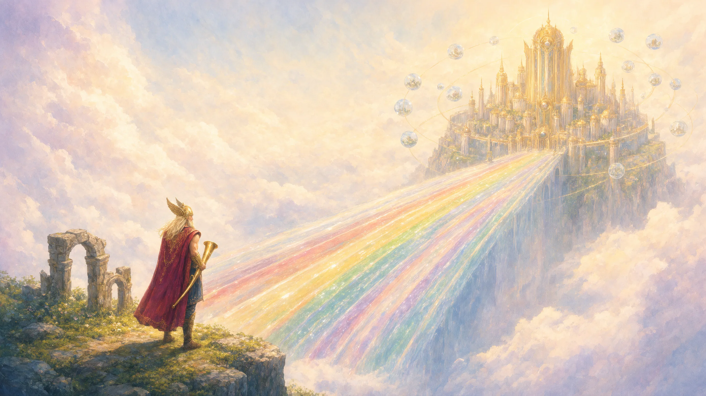
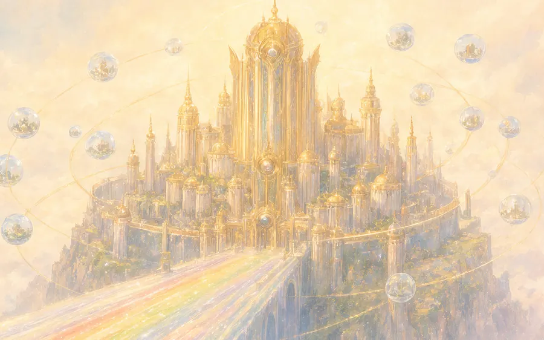
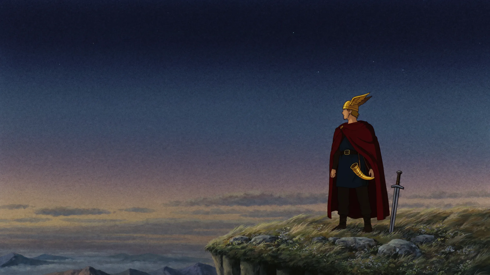

Problem 1: review
Big diffs get a quick yes.
A reviewer cannot read 77,000 lines. So the reviewer types LGTM and hits merge.
+77,460
629 files in one pull request

Heimdall starts at your ticket. It writes the tests, refuses any that pass without the feature, and puts three reviewers on the change. Ten plain rules decide the merge, and only a person approves the commit.
Open source, all Go, runs on one small VM
ticket_linkedKAN-21 links to this pull requesttestsetevery criterion has a testtest_tree_pinnedthe tree hash matches the pinreviewsall three reviews are inblockingone blocking finding is openapprovalno approval on commit 26058a1Our own build pull request was 77,460 lines across 629 files. At that size two things break, and neither of them is a model problem.
A reviewer cannot read 77,000 lines. So the reviewer types LGTM and hits merge.
+77,460
629 files in one pull request
The agent writes the code and the tests. A test that passes with or without the feature proves nothing at all.
func TestRefund_CumulativeCap(t *testing.T) { _, err := svc.Refund(p.ID, 60) if err == nil { t.Error("must be rejected") } }
These are real screens from our live runs, with names replaced. A ticket becomes a branch, a branch becomes a review, and a review becomes a verdict.
The ticket holds the money rules and the acceptance criteria. Heimdall polls Jira, so the VM needs no public URL.
Each agent has its own identity in Switch. People talk to it in the channel they already use, and a plain word tells it to remember something.
Heimdall runs each new test on the base commit in a locked container with no network. A test that passes before the feature exists is rejected, and the ones that survive are pinned by tree hash.
A developer raises the pull request and the tests pass. Then three reviewers start, cut off from each other, so one mistake cannot spread.
A reviewer found this real bug and wrote a failing test as proof. A finding with no proof cannot block the merge on its own.
The same finding appears on the pull request and in your chat. The reply happens where your team already works.
Heimdall grades every finding on a four-step scale. The first three can stop a merge. The fourth is shown as unverified, because reasoning is not proof.
The refund method checks the single refund amount against the payment amount, ignoring every refund already made on the same payment. Two refunds of 60 on a payment of 100 both succeed.
internal/payments/refund.go:36 · severity high · correctnessAn E4 finding, the reviewer's reasoning alone, is shown as unverified and cannot block the merge by itself. Only E1, E2 and E3 hold the line.
Prooffunc TestRefund_CumulativeCap(t *testing.T) { p, err := svc.Create("merch_1", 100, "USD") if err != nil { t.Fatal(err) } _, err = svc.Refund(p.ID, 60) if err != nil { t.Fatalf("first refund of 60 should succeed") } _, err = svc.Refund(p.ID, 60) if err == nil { t.Error("second refund of 60 must be rejected") } }
Heimdall runs on Switch, which gives every agent an identity, every ticket a room, and every channel a bridge. No new dashboard to learn.

The whole story ran here, from ticket to merge.
Test progress, findings and review cards.
Both stories, in one group.
Bridged channels and typed commands.
Line comments and the required check.
A ticket in progress opens a room and starts an agent.
Heimdall captures what each developer knows: their docs, their history and their coding sessions. Secrets go first. The developer approves it, and only then does their own reviewer read it.
[git:3f2a1c][pr:#88]A temporal graph of team decisions and incidents. This view shows the design.
No model is in that path. A short pure function reads the facts and fails closed. Press a rule to see the verdict move.
no approval has been recorded from an approver of the changed domains
The server, the sandbox runner and the CLI are one language. Nine containers and seven agent units share two cores and no inbound ports.
Paste it into your coding agent. It connects GitHub, Jira and your chat. It drafts your context pack, and it saves nothing before you approve.
Set up Heimdall for this repository. 1. Clone https://github.com/prathameshk421/Heimdall and read the README. 2. Install the Heimdall skills from the skills/ folder. 3. Connect to Switch. 4. Draft my context pack. Show it to me. Do not save it before I approve it. 5. Connect GitHub, Jira and our team chat. 6. Make "heimdall/gate" a required check.
$ heimdall admin init config written · secrets owner-only $ heimdall connect github $ heimdall connect jira $ heimdall connect slack $ heimdall doctor github jira switch chat — all connected $ heimdall pack refresh draft ready · waiting for you
No. An AI reviewer comments on a diff. Heimdall starts at the ticket and has tests written first. Reviewers must bring proof, and a required GitHub check stays red until plain code says that all ten rules are met.
No. Agents find problems and fix them. An approval counts only from a person who is not the author, and only on the head commit. There is no model in the decision path.
A test that passes without the feature proves nothing. Heimdall runs each new test on the base commit in a locked container. If it passes there, Heimdall rejects it. The tests that survive are pinned by hash.
The whole story ran on Slack: ticket, tests, three reviews, two real findings, the fix, a human approval, a green gate and the merge. Context packs and Graphiti memory are built and tested, but have not run on the live server. The README keeps the full list.
It means that the change has evidence and a person approved it. Heimdall makes merges safer. It does not replace your CI or your security checks, and it does not promise code without bugs.

Put it in front of a pull request and watch what it catches.